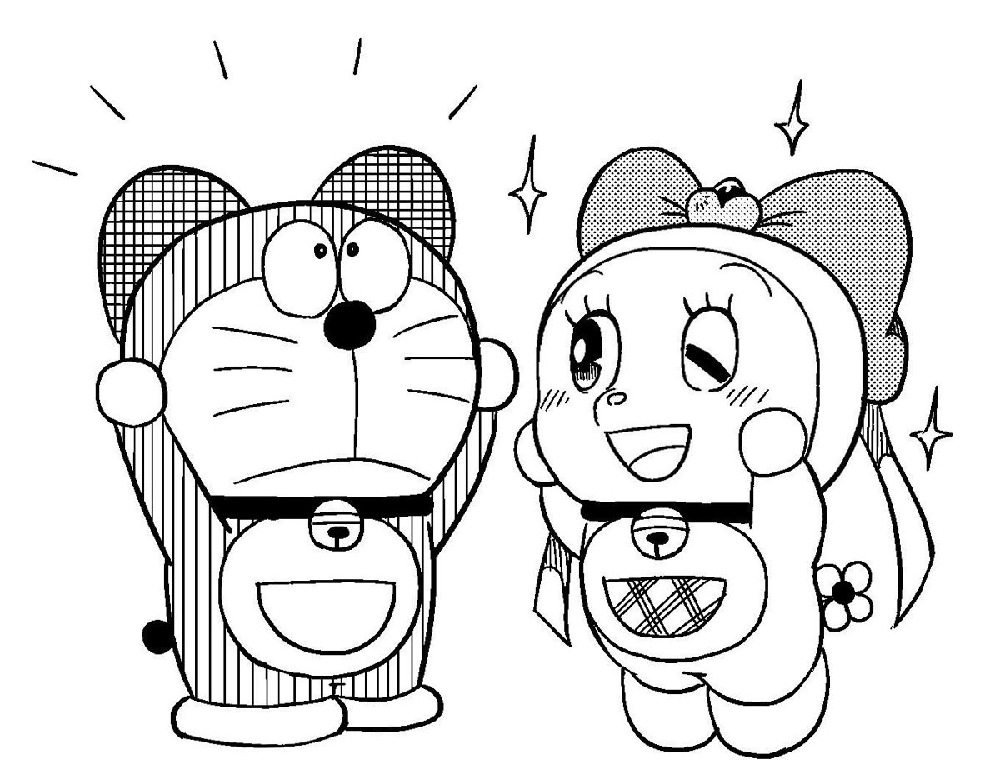
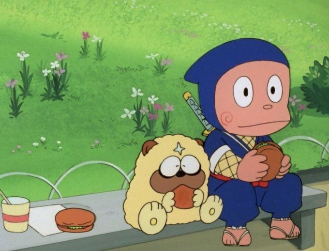
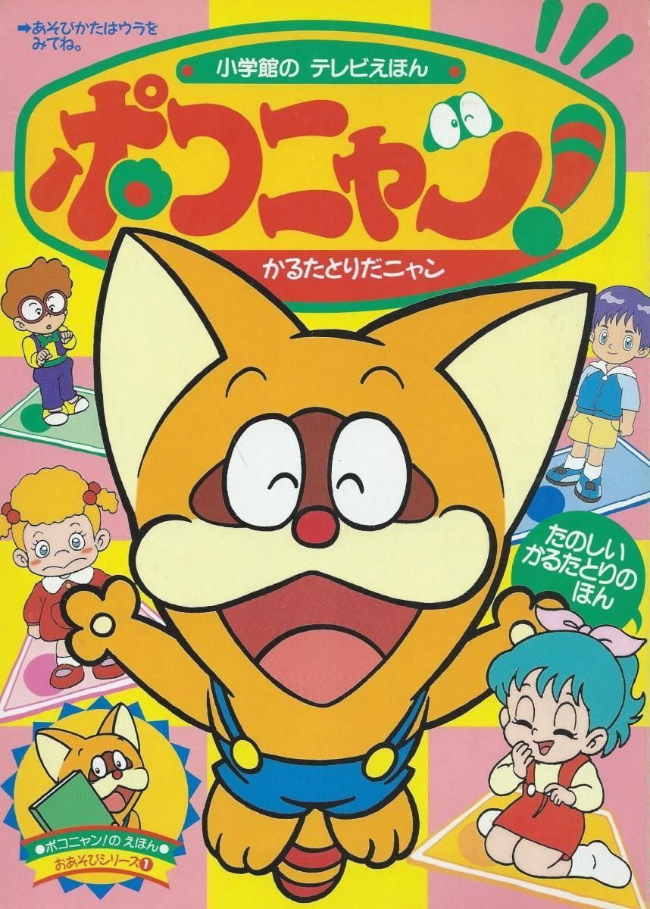
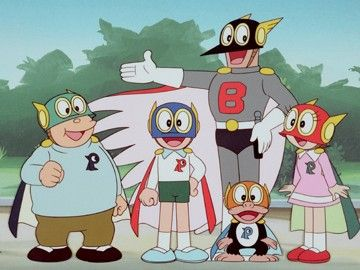

My love for childhood nostalgia
★ 28 August 2025
Childhood nostalgia is a thing when I was under 12 years old. My love for kids anime grow bigger when I rediscover them too, it is like a hidden treasure chest. Sharing them to you guys is also one of my priority
I remember the time when I still read and watch Doraemon, the manga is splendid. To be honest I would prefer the manga more than the newer version of Doraemon but I would also watch Doraemon movies too. Also, I have a big love for Doremi — Doraemon's sister, she is a big cutie
Doraemon (left) & Doremi (right) wearing a bow
Ninja Hattori is my most favorite show alongside with Doraemon, written by Fujiko F. Fujio. Although I only have a bit of memories on it but rewatching some old episodes makes me predict the show easier. Shishimaru would be my favourite ninja dog, he is fluffy and cute with the deep fatty voice xD
Hattori (right) eating a burger with Shishimaru (left)
Pokonyan also known as Rocky Rackat. I vividly remember what happened in the show. Mostly I would find how cute the mascot is, he always bouncing around with a cheery attitude. Smilling face :]]]
Pokonyan's poster
Perman is also a Japanese manga series manga written by Fujiko F. Fujio, later adapted into an anime. They started with a group of super hero, consist of a clumsy boy, a round boy, a petite girl and a monkey. I would sometimes seen the episodes about their leader, which is an adult. They save the world using what is called below
- A helmet that multiplies the wearer's physical strength, intellect and serves as a mask
- A cape that allows the wearer to fly and run with great speed
- A badge that enables that generates breathable air and to communicate with other Permans
This show is my top 3, I prefer Ninja Hattori over Perman, but again, the show is worthwhile
The super hero group "Perman"
End note
Childhood nostalgia might just fade away quickly or long lasting like the smell of scented candles lingering around or the smell of earth after rainy days. Well, these shows form my love for Fujiko Fujio's works and to the wholesome old times media too
scroll to top?